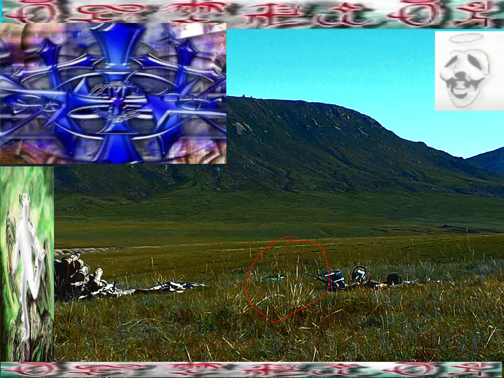

you open your eyes.
the field is cold. the grass still holds the shape of someone who left.
you don't know how long ago.
you don't know how you got here.
you only know: she was here. and now she isn't.
something in the grass is waiting.
whether it's waiting for you — that's a different question.